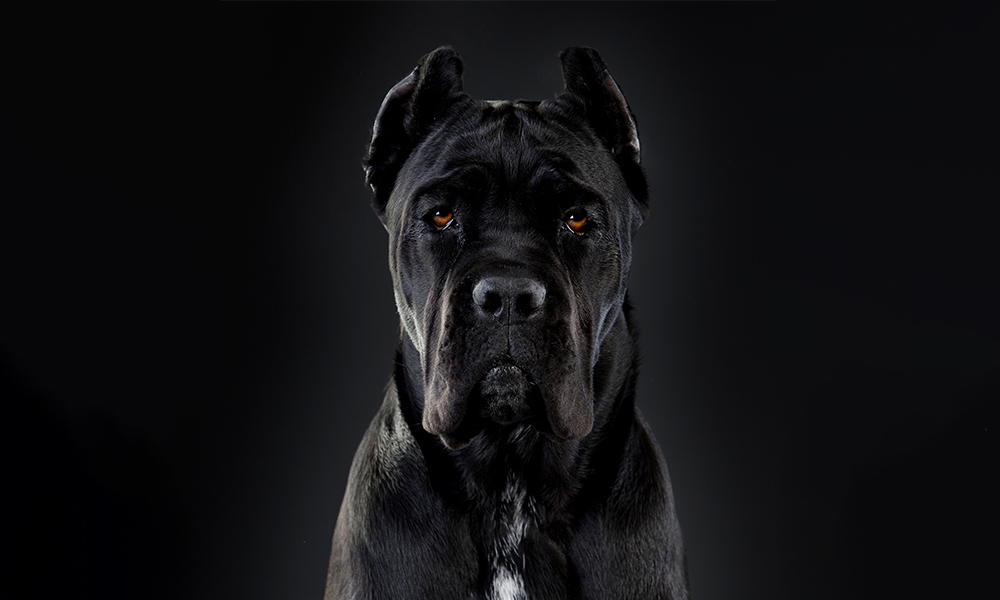

Tudo sobre o Cane Corso
O Cane Corso é uma raça italiana de mastim. É geralmente mantido como um cão de companhia ou de guarda; também pode ser usado para proteger o gado. No passado, era usado para caçar animais grandes e também para pastorear o gado. O Cane Corso é um cão inteligente, afetuoso e majestoso, com uma linhagem que remonta à Roma antiga. O nome da raça vem da palavra italiana para cão, cane, e do termo latino cohors, que significa “protetor” ou "guardião".
O Cane Corso é um cão poderoso e confiante, que pode parecer intimidante para alguns. Esses cães corajosos e vigilantes não são adequados para todos. No entanto, esses gigantes gentis são muitas vezes incompreendidos e podem fazer excelentes

Características & Aparência Geral
(Voltar)O cane corso é um cão molosso de tamanho médio para grande, que está de perto relacionado com o Mastim napolitano e o Cane da presa meridional, outras duas raças italianas. É robusto, vigoroso e elegante com músculos esguios e poderosos. Segundo o padrão oficial da raça pela FCI (Fédération Cynologique Internationale) e sua filial no Brasil (CBKC), os machos devem ter idealmente entre 64-68 cm à altura da cernelha e as fêmeas entre 60-64 cm, ambos com tolerância de 2 cm para mais ou para menos. O peso deve ser proporcional ao tamanho destes cães, variando entre 45 e 50 kg para os machos, e entre 40 e 45 kg para as fêmeas. O aspecto geral deve transparecer potência e equilíbrio com capacidade atlética.
A cabeça é larga e tipicamente molossóide. O crânio é largo ao nível dos arcos zigomáticos. O stop é bem definido. O nariz é sempre preto. O focinho é forte e quadrado, mais curto que o crânio, aproximadamente de proporção 2:1. Os maxilares são largos com leve prognatismo inferior, que não deve superar 5 milímetros. Os olhos são de tamanho médio. Os olhos bem escuros são preferidos, no entanto, a cor dos olhos tende a ser semelhante a cor do pelo.

Força da Mordida
O cane corso possui uma das mordidas mais poderosas do mundo canino, na ordem dos 700 PSI, o que corresponde aproximadamente a 49,2 kgf/cm (quilograma-força por centímetro quadrado). A força da mordida é a quantidade de pressão que uma mordida pode exercer sobre um objeto. É normalmente medida em libras por polegada quadrada (psi). Para comparar a força da mordida de diferentes animais, é comum usar o quociente de força da mordida (BFQ), que é a razão entre a força da mordida em newtons e a massa corporal em quilogramas

Conheça outras raças também: